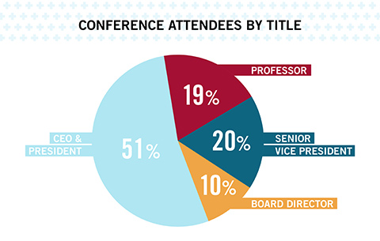

April 2015 Conference
The Forum on Health Care Innovation conference is a periodic event that brings together thought leaders from across the health care industry to discuss innovation. Participants in this invitation-only event seek to identify ways to overcome the barriers to innovation in health care and to identify opportunities to improve the value delivered to consumers.
Keynote Speakers
 Mark T. Bertolini
Mark T. Bertolini Jeffrey S. Flier, MD
Jeffrey S. Flier, MD Nitin Nohria
Nitin Nohria Lawrence H. Summers
Lawrence H. SummersWin Conference Tickets
We will give away a limited number of free tickets to those individuals who have provided the most insightful comments on this year’s Challenge applicants at this link. (You don’t have to apply to the Challenge to participate, but you will need to register!)
Attendees
Our previous conference was attended by over 150 senior health care leaders from virtually every sector of health care, who came together to talk about barriers and opportunities for health care innovation.


Keynote Speakers
 Donald M. Berwick, MD
Donald M. Berwick, MD Alan M. Garber, MD
Alan M. Garber, MDSession Videos
Reducing Employee Health Care Costs: Beyond Cost Shifting
Moderated by Regina E. Herzlinger, Nancy R. McPherson Professor of Business Administration at HBS, this panel focused on innovative product models, increased access to quality and cost information, and incentives to encourage healthy behaviors in employees.
 Regina E. Herzlinger
Regina E. Herzlinger Lonny Reisman, MD
Lonny Reisman, MD Kenneth L. Sperling
Kenneth L. Sperling Brad Wolfsen
Brad WolfsenDeveloping More Meaningful Drugs, Devices, and Diagnostics
Led by William W. Chin, MD, Bertarelli Professor of Translational Medical Science and Professor of Medicine at HMS, this panel focused on new approaches to research and innovative business models, and how life science companies can be more patient centric.
 William W. Chin, MD
William W. Chin, MD Alpheus Bingham
Alpheus Bingham Michael A. Mussallem
Michael A. Mussallem Christopher A. Viehbacher
Christopher A. ViehbacherTranslating Academic Research into Clinical and Commercial Use
Headed by Barbara J. McNeil, MD, Ridley Watts Professor of Health Care Policy at HMS, this panel explored novel financing mechanisms as well as opportunities for academia, foundations, and companies to share critical information.
 Kathy Giusti
Kathy Giusti Eric S. Lander
Eric S. Lander Terry G. McGuire
Terry G. McGuire Barbara J. McNeil, MD
Barbara J. McNeil, MDImproving the Patient Experience
Moderated by Clayton M. Christensen, Kim B. Clark Professor of Business Administration at HBS, this panel discussed approaches to making care delivery more patient-friendly by providing services where and when people want them, organized in clear and efficient ways.
 Tim Brown
Tim Brown Clayton M. Christensen
Clayton M. Christensen Andrew J. Sussman, MD
Andrew J. Sussman, MDImproving the Value of Care Delivery
Led by Michael E. Porter, Bishop William Lawrence University Professor at Harvard University, this panel discussed the critical role that high-quality, established health care providers can play in coordinating care for individuals as well as managing care for defined populations.
 Toby M. Cosgrove, MD
Toby M. Cosgrove, MD Gary L. Gottlieb, MD
Gary L. Gottlieb, MD Michael E. Porter
Michael E. Porter Nancy M. Schlichting
Nancy M. Schlichting
A key output of the previous conference was a report entitled "5 Imperatives," which outlined the five key steps to fostering innovation in health care. Participants agreed that there is no "magic bullet" that can heroically resolve our health care challenges. Instead, the most intriguing ideas share common themes of collaboration, integration, and distributed knowledge. The 5 key imperatives are:
Making value the central objective
In isolation, efforts to either reduce costs or improve outcomes are insufficient; we need to do both through care coordination and shared information.
Promoting novel approaches to process improvement
Instead of largely focusing on product innovation, we also must create an environment that encourages process improvement and acknowledges that "failure" represents an important component of experimentation and learning.
Making consumerism really work
Today, consumerism remains a strong idea with weak means of execution. We will achieve greater success when providers organize efforts around patient needs and when patients become more active agents in managing their own health.
Decentralizing approaches to problem solving
We should facilitate the movement of care delivery and health care innovation from centralized centers of expertise out to the periphery, where more providers, innovators, and patients can engage in collaborative improvement efforts.
Integrating new approaches into established organizations
Our future must build on past successes. Existing health care institutions must be reinforced with efforts to integrate new knowledge into established organizations and the communities they serve.